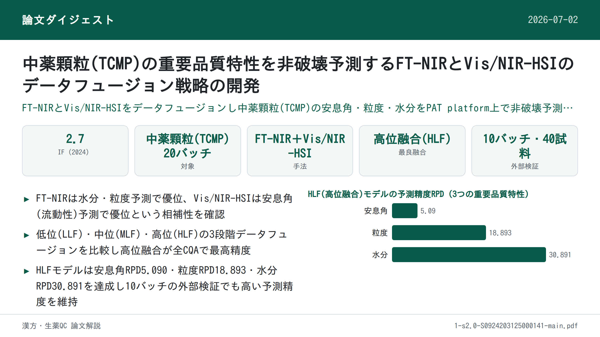

中薬顆粒(TCMP)の重要品質特性を非破壊予測するFT-NIRとVis/NIR-HSIのデータフュージョン戦略の開発

<!-- 方針: ほぼ全訳＋必要に応じた補足。原文構成に沿って訳出。「> 補足:」は訳者注。 -->
書誌情報
- 原題: Development of a data fusion strategy combining FT-NIR and Vis/NIR-HSI for non-destructive prediction of critical quality attributes in traditional Chinese medicine particles
- 著者: Ziqian Wang, Xinhao Wan, Xiaorong Luo, Ming Yang, Xuecheng Wang, Zhijian Zhong, Qing Tao（責任著者）, Zhenfeng Wu（責任著者）
- 所属: 江西中医薬大学 現代方剤・古典名方近代化国家重点実験室（a）／江西省薬品検査センター（b）／江西中医薬大学 コンピュータ学院（c）／華潤江中製薬集団有限公司（d）、いずれも中国・南昌
- 掲載: Vibrational Spectroscopy 137 (2025) 103780. https://doi.org/10.1016/j.vibspec.2025.103780
- インパクトファクター: 2.7（Vibrational Spectroscopy、JCR 2024 / Clarivate。出典により2.6〜3.2程度の幅で報告されており、算出方法の違いによるばらつきがある点に留意）
- 受理経過: 受領 2024-11-27 / 改訂 2025-01-12 / 採録 2025-01-30 / オンライン公開 2025-02-01
- ライセンス: © 2025 Elsevier B.V. All rights reserved（テキスト・データマイニング、AI学習等を含む権利をすべて留保）
補足: TCMP = Traditional Chinese Medicine Particles（中薬顆粒。生薬エキス末に賦形剤を加えて造粒した顆粒剤）。FT-NIR = フーリエ変換近赤外分光法。Vis/NIR-HSI = 可視/近赤外ハイパースペクトルイメージング。CQA = Critical Quality Attribute（重要品質特性）。CMA = Critical Material Attribute（重要原料特性）。CPP = Critical Process Parameter（重要工程パラメータ）。PAT = Process Analytical Technology（プロセス分析技術）。LLF/MLF/HLF = 低位／中位／高位データフュージョン。
要旨（Abstract）
本研究は、フーリエ変換近赤外分光法(FT-NIR)と可視/近赤外ハイパースペクトルイメージング(Vis/NIR-HSI)の相補的な能力を検討し、中薬顆粒(TCMP)の重要品質特性(CQA)を予測するデータフュージョン戦略を開発するものである。本研究は、これらの技術を先進的なプロセス分析技術(PAT)プラットフォームへ統合することに重点を置く。FT-NIRの分子特性評価における強みと、Vis/NIR-HSIの空間的品質評価における強みを活かし、予測精度を高める複数のデータフュージョン戦略を評価した。流動層造粒法により20バッチのTCMPを作製し、FT-NIRとVis/NIR-HSIでその特性を評価した。比較解析の結果、水分含量および粒度の単独予測ではFT-NIRがVis/NIR-HSIを上回った。続いて、両スペクトル領域の相補的情報を統合する高度な融合スキームを開発し、部分最小二乗(PLS)モデルを構築した。評価した3つの融合レベルのうち、高位融合戦略が流動性・粒度・水分含量の予測において最も高い精度を達成した。本研究は、FT-NIRとVis/NIR-HSIデータの高位融合がTCMPのCQA予測の効率と精度を大幅に向上させ得ることを実証するものである。さらに、提案手法は顆粒状医薬品の迅速かつ非破壊的な品質分析を可能にし、リアルタイムのオンラインモニタリングを実現し、自動化された医薬品安全性プロセス制御を推進するための実践的な知見を提供する。
1. 序論（Introduction）
造粒は経口固形製剤の製造における重要な工程であり、製剤設計において重要な役割を果たす。均一な粒度と一貫した外観をもつ粒子を製造することは、流動性や溶解性といった原料の物理的性質を高め、正確な投与量や携帯性の向上といった利点をもたらす[1,2]。これらの粒子は顆粒剤・カプセル剤のような最終製品そのものである場合もあれば、良好な圧縮成形性を必要とする錠剤製造の中間体である場合もある。原料の水分含量の変動や、混合時間・造粒速度といった工程条件の変動を含む造粒プロセスの多様性・複雑性を踏まえると、粒度や原料の流動性といった重要原料特性(CMA)、造粒温度や結合剤添加速度といった重要工程パラメータ(CPP)、さらに周囲湿度や作業者の取り扱いといった外的要因を効果的に管理することが不可欠である。これらの管理は、製品の品質・安全性・有効性を確保するために所定の範囲内に維持されるべき物理的・化学的・生物学的・微生物学的性質と定義される重要品質特性(CQA)の管理にとって極めて重要である。造粒プロセスにおけるCQAには、均一性・溶出速度・安定性が含まれ、これらは高品質な経口固形製剤を一貫して製造するために不可欠である。例えば、水分含量(CMA)や造粒温度(CPP)の管理が不十分だと顆粒の流動性(CQA)が低下し、下流工程に悪影響を及ぼす可能性がある。近年の研究は、造粒プロセスを最適化し製品品質を高めるうえで、CMA・CPP・CQAを体系的に管理することの重要性をさらに強調している[3–5]。
造粒に影響を及ぼす要因への理解を深めるため、多くの研究が単一または複数のPATツールを用いてCQA評価の向上を図ってきた[6]。流動性・粒度・水分含量といった特性は、打錠時の圧縮性・緻密化・付着性に大きく影響し、最終的に錠剤品質を左右するため重要である[7–9]。例えば、広く用いられるPATツールであるNIR分光法は、水分含量や粒度をリアルタイムでモニタリングし、工程パラメータの動的な調整を可能にするために用いられてきた。同様に、ラマン分光法は化学的均一性を評価し、造粒中の製品品質の一貫性を確保するために利用されてきた。様々なPATツールが、製剤科学における製品品質のモニタリングと管理に広く採用されている[10,11]。これらのツールは、粒度や水分含量といった単一のCQAをモニタリングするツールと、複数の特性を同時に評価する多CQAモニタリングツールに分類できる。しかし、中薬顆粒(TCMP)の造粒には、原料特性の変動性に起因する固有の課題が存在する。TCMP原料のほとんどは生薬エキスであり、複雑な化学組成、高い吸湿傾向、強い粘着性、多様な物理化学的性質を有する[12]。さらに、一部の薬物は不均一な粒度・密度の原末を含み、流動性が悪く、層分離しやすい傾向がある。従来の造粒プロセスは、これらの特性ゆえにTCMPへ直接適用することが困難である。品質評価と終点検出のための従来のオフラインモニタリング手法は、こうした課題に対処するために必要なリアルタイムのフィードバックを欠いており、非効率性や不整合を招くことが多い[13]。これに対しNIR分光法やラマン分光法といったPATツールは、流動性・水分含量・化学的均一性といったCQAを検出できるリアルタイムモニタリング機能を提供する[14–16]。これらのツールは製造プロセスの設計・分析・管理を促進し、サイクルタイムを短縮し、最終製品の品質を確保するものであり、TCMP造粒の複雑な要求に特に適している。同時に、造粒プロセス中のCQAモニタリングには単一または複数のPATツールを活用する傾向が強まっている。このアプローチは多変量データ処理技術と組み合わされることで、造粒の理解と管理を高める予測モデルの開発を促進する[17]。
フーリエ変換近赤外分光法(FT-NIR)と可視/近赤外ハイパースペクトルイメージング(Vis/NIR-HSI)は、食品・医薬品業界で広く用いられる迅速かつ非破壊的な技術である。FT-NIRはFDAのPAT産業ガイダンスの重要な構成要素であり、所定の分布内における粒度の微細な変動の検出や、圧縮された粒子の変形特性の評価に優れる[18]。さらにFT-NIRは、粒子の水分含量や流動性の測定にも頻繁に用いられ、CQAモニタリングにとって価値あるツールとなっている[19]。しかしFT-NIR単独では、TCMPのCQAを正確に予測するために必要な複雑な物理的・化学的性質を完全には捉えられないという限界がある。もう一つの迅速かつ非破壊的な手法であるVis/NIR-HSIは、イメージングと分光法を組み合わせることで空間分解能をもつ品質データを提供し、顆粒の内部・外部双方の特性を捉えることでFT-NIRを補完する。FT-NIRが分子特性評価に優れる一方、Vis/NIR-HSIは均一性や粒度のばらつきといった空間分布を評価する能力を追加する。これらの相補的な強みにより、両者の統合はTCMPにおけるCQAモニタリングに特に有益となる。例えば、流動性・化学的均一性・顆粒の均質性といった追加のCQAを、これらの技術を用いて効果的にモニタリングできる。近年、ハイパースペクトルイメージングは医薬品分野での応用が増加している。これらの技術は造粒における重要特性のモニタリングにますます適用されつつあり、例えばTaoらは水分含量・粒度分布・4種の生理活性成分含量を造粒プロセス中にモニタリングするハイパースペクトル画像解析法を開発している[20]。これは、Vis/NIR-HSIがFT-NIRを補完し、医薬品製造における複雑なCQAのモニタリングを強化しうる可能性を示している。
FT-NIRやVis/NIR-HSIといった単一技術は医薬品業界でCQAモニタリングのために広く研究・応用されてきたが、スペクトル範囲の制約やデータカバレッジの不完全性といった限界から、データフュージョン手法の活用が必要とされる。現行の分光法・ハイパースペクトルイメージングシステムは、センサー製造上の課題により400–2500 nmの全域をカバーすることが稀である。そのため、それぞれ384.4–1004.6 nm(CMOS検出器)と1000–2500 nm(InGaAs検出器)の範囲に感度をもつ2つの検出器を用いることが実用的な解決策となる[21]。例えば、FT-NIRは分子特性や水分含量の解析に優れる一方、Vis/NIR-HSIは空間分布と粒度データを提供するため、両者の統合はTCMPにとって特に価値が高い。複数の計測機器からの情報を統合するデータフュージョンは、相補的なデータを統合することでこれらの限界に対処し、プロセス理解と管理を強化する。例えば、FT-NIRとVis/NIR-HSIのデータを組み合わせることで、TCMPの重要なCQAである粒度と水分含量の予測を改善できる。データフュージョンは低位・中位・高位の3レベルに分類され、スペクトル情報を統合するための体系的なアプローチを提供する[22,23]。低位データフュージョン(LLF)では、前処理済みの生スペクトルデータが直接結合される。例えばFT-NIRとVis/NIR-HSIのスペクトルを統合して包括的なスペクトルカバレッジを提供する。このアプローチは異なるスペクトル範囲からの相補的情報を捉え、粒子特性の微細な変動の検出に特に有用である。中位データフュージョン(MLF)では、化学組成や粒度といった主要な特徴が異なるデータソースから抽出され、モデリング・解析のために統合される。例えば、FT-NIR由来の水分含量とVis/NIR-HSI由来の空間的な粒子分布を組み合わせることで、TCMPの化学的・空間的属性を両方捉えるため、CQAの予測精度を高められる。高位データフュージョン(HLF)は個々のモデルの予測結果を集約する。例えば水分含量と流動性の個別モデルを組み合わせて最終判断を下す。このアプローチは各モデルの強みを活かして意思決定を改善するのに特に有用である。データフュージョンは、不規則な粒度・密度・吸湿レベルといった原料特性の固有の変動性ゆえに、従来手法では効果的に対処しづらいTCMPにとって特に価値がある。例えばCasianらは、NIRスペクトルデータと粒度分布を統合する高位データフュージョンにより錠剤製造の管理を改善できることを示した[18]。同様にFuらは、NIRとAE(音響放射)技術を高位データフュージョンで組み合わせることで、粒度解析の精度と信頼性を高めた[24]。この可能性にもかかわらず、FT-NIRとVis/NIR-HSIを組み合わせたデータフュージョンによりTCMPのCQAを予測した研究はこれまで報告されておらず、本研究は当該分野への革新的な貢献となる。
したがって本研究は、FT-NIRとVis/NIR-HSIをデータフュージョン戦略と統合し、TCMPのCQAをリアルタイムかつ正確に予測する多機器PATプラットフォームを開発することを目的とする。具体的な目的は以下の通りである。(1) 単一分光技術、および低位・中位・高位のデータフュージョンを用いて、TCMPのCQAに対する部分最小二乗(PLS)予測モデルを開発する。(2) 異なる融合戦略間でモデル性能を比較し、最適なデータフュージョンスキームを特定し、CQAモニタリングのための頑健な多機器PATプラットフォームを確立する。本研究で対象とするCQAは、流動性・粒度・水分含量であり、これらはTCMP製造における製品品質と一貫性の確保にとって重要である。本手法は、FT-NIRとVis/NIR-HSIの相補的な強みを組み合わせることで、既存の単一技術手法と比較してより包括的かつ正確な解析を提供する新規なアプローチである。両技術の独自のスペクトルデータを活用することで、本研究はTCMPのCQAを包括的・迅速・非破壊的に検出する革新的な解決策を提案する。本研究の知見は、特に中薬製造の複雑な要求に対応する、医薬品製造におけるオンライン薬物安全性モニタリングと自動化を推進するための理論的・実践的基盤を確立することが期待される。
2. 材料と方法（Materials and methods）
2.1 材料
本研究で用いたTCMP構成成分は、中薬エキス末(生薬エキス末)・山薬粉・糖粉・糊精であり、いずれも江西江中製薬有限公司から供給された。詳細は以下の通り。中薬エキス末は生理活性成分含量が標準化されたものを微粉末の形態で供給。山薬粉は100–120メッシュに調製されたもの。糖粉は純度99%以上の医薬品グレードのショ糖。糊精は医薬品グレードでデキストロース当量(DE値)10–15のものを使用した。本研究で使用したすべての材料は医薬品グレードであり、関連する薬局方規格を満たすものであった。
2.2 試料調製
6因子×2水準の部分要因実験計画により、20バッチのTCMPを調製した。造粒温度・乾燥時間・結合剤濃度・吸気圧・噴霧化(アトマイズ)圧・供給速度の6因子を、Table 1に示すマトリクスに従って変動させた。造粒は固定した原料比率で流動層造粒機を用いて行った。流動層造粒プロセスは、(1)流動層の加熱、(2)各濃度の結合剤の調合と水浴での加熱、(3)実験計画で指定された工程パラメータに従った造粒、の3ステップからなる。異なる濃度でのTCMPの処方組成・配合量はTable 2に示す通りである。
Table 1. TCMP調製時の因子変動を示すDoE(実験計画)マトリクス（20実験）
補足: 原文Table 1は、造粒温度・乾燥時間・結合剤濃度・吸気圧・噴霧化圧・供給速度の6因子(一部センターポイントを含む2水準要因計画)の水準組み合わせを実験番号1–20ごとに示す表である。抽出したテキストでは表のヘッダー行と数値行のレイアウトが崩れており、各列がどの因子に対応するかを一意に確定できなかったため、誤った対応付けを避けるべく、以下では各実験の6つの因子水準の生の数値のみを原文の並び順のまま提示する（列の因子名は原文参照）。
| Exp | F1 | F2 | F3 | F4 | F5 | F6 |
|---|---|---|---|---|---|---|
| 1 | 65 | 18 | 0.3 | 15.0 | 40 | 8.0 |
| 2 | 55 | 13 | 0.2 | 11.5 | 35 | 5.5 |
| 3 | 65 | 18 | 0.1 | 15.0 | 30 | 3.0 |
| 4 | 45 | 18 | 0.1 | 15.0 | 40 | 3.0 |
| 5 | 65 | 8 | 0.3 | 8.0 | 30 | 8.0 |
| 6 | 45 | 18 | 0.1 | 8.0 | 40 | 8.0 |
| 7 | 65 | 8 | 0.1 | 15.0 | 40 | 8.0 |
| 8 | 65 | 8 | 0.3 | 15.0 | 30 | 3.0 |
| 9 | 45 | 18 | 0.3 | 8.0 | 30 | 3.0 |
| 10 | 45 | 8 | 0.1 | 8.0 | 30 | 3.0 |
| 11 | 55 | 13 | 0.2 | 11.5 | 35 | 5.5 |
| 12 | 45 | 18 | 0.3 | 15.0 | 30 | 8.0 |
| 13 | 45 | 8 | 0.1 | 15.0 | 30 | 8.0 |
| 14 | 65 | 18 | 0.3 | 8.0 | 40 | 3.0 |
| 15 | 45 | 8 | 0.3 | 8.0 | 40 | 8.0 |
| 16 | 65 | 8 | 0.1 | 8.0 | 40 | 3.0 |
| 17 | 55 | 13 | 0.2 | 11.5 | 35 | 5.5 |
| 18 | 45 | 8 | 0.3 | 15.0 | 40 | 3.0 |
| 19 | 65 | 18 | 0.1 | 8.0 | 30 | 8.0 |
| 20 | 55 | 13 | 0.2 | 11.5 | 35 | 5.5 |
Table 2. TCMPの処方組成と配合量
| 原料 | 結合剤濃度 8% | 結合剤濃度 13% | 結合剤濃度 18% |
|---|---|---|---|
| 中薬エキス末 (g) | 375 | 375 | 375 |
| 山薬粉 (g) | 675 | 675 | 675 |
| 糖粉 (g) | 1875 | 1875 | 1875 |
| 糊精 (g) | 75 | 75 | 75 |
| 加水量 (mL) | 863 | 502 | 342 |
補足: 上表は結合剤濃度8%・13%・18%それぞれにおけるTCMPの処方組成・配合量を示す。加水量は各結合剤濃度の調製に必要な水量に対応する。
2.3 CQAの測定
2.3.1 水分含量
TCMP試料の水分含量を求めるため、まず清浄な秤量瓶を105℃のオーブンで1時間乾燥した。取り出し後、デシケーター内で室温まで冷却して秤量する。この操作を、連続する測定値の差が2 mg以内になるまで繰り返し、安定した質量を確保した。空瓶の質量をm3として記録する。次に秤量瓶にTCMP試料を加え、試料と瓶の合計質量をm1として記録する。試料を入れた瓶を105℃のオーブンに12時間静置して水分を除去する。この乾燥・秤量操作を、連続する測定値の差が2 mg以内になるまで繰り返し、正確な結果を確保した。乾燥後の試料と瓶の最終質量をm2として記録する。これらの測定質量を用いて水分含量(MC)を算出した。MCは乾燥中に除去された水分の割合を反映し、製品安定性を確保するうえで重要な品質パラメータである。
補足: 原文の式(1)はテキスト抽出時にレイアウトが崩れており、正確な式を再現できなかった（原文参照）。定義から、m1=秤量瓶+試料(乾燥前)質量、m2=秤量瓶+試料(乾燥後)質量、m3=空の秤量瓶質量であり、一般に水分含量は「乾燥により失われた水分質量／乾燥前試料質量×100%」で定義される。
2.3.2 粒度
試料の粒度は、Malvern Scirocco 2000乾式分散ユニットを備えたMalvern Mastersizer 2000(Malvern Instruments、英国ウスターシャー)を用い、レーザー回折法の乾式分散モードで測定した。各測定に約3 gの試料を使用し、測定時間6秒、分散用空気圧2 barとした。Mie散乱理論に基づき動作するMalvern Mastersizer 2000は、精度と乾式分散への適合性で広く認知されており、本研究の粒度解析に理想的な選択であった。D50は造粒プロセスにおけるCQAであり、粒子の流動性に大きく影響するため、本研究ではTCMPの粒度解析にD50を用いた。
2.3.3 流動性
TCMP試料の流動性は、粉体の流動性評価用に設計された機器であるBT-1001インテリジェント粉体特性試験機を用いて測定した。約50 gの試料を機器の投入口に加え、篩径10 mmの漏斗を均一に流下させ、測定台上にこぼして円錐を形成させた。円錐が安定・対称となり、粉体が測定台の周囲に均一に落下する状態になった時点で供給を停止した。円錐の斜面と測定台面との角度を安息角として測定した。最終的な安息角は3回の測定値の平均から求めた。安息角は粒子の流動性を評価する主要パラメータである。本研究では、流動性が不十分だと不均一な造粒・不規則な粒子分布・圧縮の困難さを招き最終製品の品質に影響し得るため、安息角をTCMPの流動性の指標として用いた。
2.4 FT-NIR分光法
試料の拡散反射スペクトルは、Antaris™ II FT-NIR(Thermo Fisher Scientific社、米国ウォルサム)を用いて取得した。装置は1000–2500 nmのスペクトル範囲、分解能8 cm⁻¹でスキャンするよう設定した。各測定は64回のスキャンからなり、精度確保のためバックグラウンドスペクトルを1時間ごとに取得した。安定した信号を得るため、分光計は25℃・相対湿度47%未満の管理条件下で運用し、データ収集前に1時間のウォームアップを行った。各試料についてスキャンを3回繰り返し、その平均値を統計解析に用いた。FT-NIR分光法は、その迅速性・非破壊性、および詳細な分子・組成情報を提供できる能力から本研究に選択された。Antaris™ IIモデルは、複雑な試料であるTCMPの解析に理想的な高感度・高精度・高安定性を有することから特に選ばれた。広いスペクトル範囲の取得と繰り返しスキャンにより、正確な統計モデリングとTCMPのCQA予測にとって重要な、信頼性・再現性の高いデータが確保された。
2.5 Vis/NIRハイパースペクトルイメージング
試料のハイパースペクトル画像は、384.4–1004.6 nmの波長範囲で動作するVis/NIRハイパースペクトルカメラ(GaiaField-V10、四川双利合浦科技有限公司、中国成都)を用いて取得した。本機器は128のスペクトルバンドと640点の空間分解能を備え、詳細なスペクトル・空間情報の取得に適している。17 mm焦点距離のレンズを暗箱内のカメラに装着し、試料の50 cm上方に配置して均一な照明を確保し外部干渉を最小化した。照明には120 Wのハロゲンランプ4灯を用い、露光時間・フレーム周期は光強度に基づき5 msに設定した。
正確なスペクトルデータを得るため、スペクトル画像取得前に黒板・白板の参照画像を取得した。黒板参照画像はカメラの暗電流を、白板参照画像は照明のばらつきと検出器感度の変動を補正し、校正済みの反射率データを確保する。校正プロセスは、以下の式によって生のハイパースペクトル画像を反射率画像に変換する。
補足: 原文の式(2)もテキスト抽出時にレイアウト崩れが生じており、原文の記載通りには再現できない。RWは白板参照画像、RDは黒板参照画像、RCは校正後の反射率画像、RSは生のハイパースペクトル画像と定義されている。ハイパースペクトルイメージングにおける反射率校正はRC = (RS − RD) / (RW − RD)という標準形で表されるのが一般的であり、本研究の式もこれに準ずるものと考えられるが、正確な表記は原文参照。
合計100セットのハイパースペクトル画像を取得し、反射率画像に校正した。校正後の画像はENVI 5.3ソフトウェアに取り込んで処理した。各試料について関心領域(ROI)を手動で選択し、解析対象とする関連領域を切り出した。各スペクトルバンドについて、ROI内の全画素の平均スペクトル値を算出した。
本研究におけるVis/NIR HSIの利用は、TCMP解析に大きな利点をもたらす。スペクトル情報と空間情報を同時に取得することで、化学組成と物理的性質の同時評価が可能となり、流動性・粒度・水分含量といったCQAの予測に理想的である。ROIベースのアプローチにより関連する試料領域のみが解析されるため、後続のモデリング・解析に用いるスペクトルデータの精度と信頼性が高まる。
2.6 データセット分割とスペクトル前処理
Kennard-Stoneアルゴリズム[25]を用いて、合計75試料を校正セット、25試料を検証セットとして選定した。同アルゴリズムはスペクトル空間内での試料の均等な分布を保証し、モデルの頑健性を高める。ランダムノイズやベースラインドリフトといった外的要因に起因する誤差に対処するため、データ品質とモデル予測性能を高める複数のスペクトル前処理法を適用した[26]。前処理法には、多重散乱補正(MSC)、標準正規変量変換(SNV)、一次微分(1st)、二次微分(2nd)、一次微分+SGスムージングフィルタ(1st+SG)、二次微分+SGスムージングフィルタ(2nd+SG)を含む。各前処理法の有効性はモデル性能を比較することで評価し、予測精度とスペクトル品質を高める能力に基づいて最適な手法を選択した[27]。
2.7 特徴変数選択
スペクトルデータには本質的な情報と冗長な情報の両方が含まれており、モデルの簡素化・計算量の削減・予測性能の向上、特に本研究で対象とするCQAの正確な予測にとって、特徴変数選択が重要となる[28]。この目的のため、Competitive Adaptive Reweighted Sampling(CARS)、Random Frog(RF)、Monte Carlo Uninformative Variable Elimination(MC-UVE)の3つの特徴変数選択法を採用した。これらの手法はノイズを低減し関連するスペクトル情報に焦点を絞ることで、予測モデルの効率と精度を高める主要変数を特定した[29–31]。これらの特徴選択法は高次元スペクトルデータの課題に対処し、より精密な波長選択と頑健なモデル開発を可能にする。例えばRFを適用した際には、水分含量に関連する波長変数が特定され、モデル精度が大幅に向上した。これらの手法をモデリングプロセスに統合することは、TCMP生産における効率的かつ信頼性の高い予測を確保する、CQAの予測モデル開発という本研究の目的を直接支えるものである。
2.8 マルチソースデータフュージョン
本研究で用いた3つのデータフュージョンスキームをFig. 1に示す[32]。低位融合(LLF)では、NIRとハイパースペクトルの前処理済みデータを試料の入力変数として結合処理する。中位融合(MLF)には2つのシナリオがある。i) NIRとハイパースペクトルデータそれぞれに同一の特徴選択法を用いて特徴変数を選択し、両スペクトルの特徴変数を融合する。これは一般的な中間レベル戦略である[33,34]。ii) FT-NIRとVis/NIR-HSIデータそれぞれに複数の特徴選択法を用いて特徴変数を選択し、両スペクトルの最良の変数選択結果を融合する。高位融合(HLF)では、NIRとハイパースペクトルデータそれぞれについて個別の多変量解析モデルを作成し、各モデルの結果を統合する。本研究では重回帰分析を用いて高位融合問題を解いた。重回帰式は以下の通りである。
Yac = b + K1X1,pc + K2X2,pc (3) Ydfpc = b + K1X1,pvc + K2X2,pvc (4) Ydfpv = b + K1X1,pvv + K2X2,pvv (5)
ここでYacは校正セットの実測値、Ydfpc・Ydfpvはそれぞれ校正セット・検証セットに対する高位データフュージョンの予測値、X1,pc・X2,pcはそれぞれNIRとハイパースペクトルの校正セットの予測値、X1,pvv・X2,pvvはそれぞれNIRとハイパースペクトルの検証セットの予測値、K1・K2はそれぞれNIRとハイパースペクトルの重み、bは重回帰の切片である。
補足: 上記(3)式は原文でも「Yacは校正セットの実測値」と説明されているが、式そのものは重回帰による予測値の算出式であり、変数名の対応関係がやや不整合に見える（原文のテキスト抽出時の表記ゆれの可能性がある）。数値・定義は原文の記載をそのまま訳出した。
これらのデータフュージョン戦略により、本研究はNIRとVis/NIR-HSIの相補的情報を統合するだけでなく、TCMPのCQA(流動性・粒度・水分含量など)の予測精度を大幅に改善し、TCMP生産プロセスにおける品質の一貫性と効率最適化を確保する。
Table 3. 異なる前処理法によるPLSモデリング結果（単一分光モデル）
| 指標 | データ | 前処理法 | R²c | RMSEC | RMSECV | R²p | RMSEP | RPD |
|---|---|---|---|---|---|---|---|---|
| 安息角(°) | FT-NIR | MSC | 0.687 | 1.223 | 1.726 | 0.854 | 1.205 | 2.552 |
| SNV | 0.693 | 1.212 | 1.814 | 0.862 | 1.187 | 2.591 | ||
| 1st | 0.680 | 1.267 | 1.846 | 0.850 | 1.318 | 2.314 | ||
| 2nd | 0.563 | 1.403 | 1.830 | 0.841 | 1.642 | 1.900 | ||
| 1st+SG | 0.666 | 1.279 | 1.848 | 0.820 | 1.369 | 2.253 | ||
| 2nd+SG | 0.805 | 1.071 | 1.699 | 0.717 | 1.399 | 1.896 | ||
| Vis/NIR-HSI | MSC | 0.819 | 1.109 | 1.617 | 0.628 | 1.353 | 1.627 | |
| SNV | 0.780 | 1.214 | 1.654 | 0.644 | 1.368 | 1.608 | ||
| 1st | 0.811 | 1.074 | 1.360 | 0.794 | 1.130 | 2.130 | ||
| 2nd | 0.781 | 1.092 | 1.684 | 0.883 | 1.047 | 2.684 | ||
| 1st+SG | 0.805 | 1.040 | 1.410 | 0.872 | 0.983 | 2.763 | ||
| 2nd+SG | 0.811 | 1.179 | 1.733 | 0.491 | 1.407 | 1.248 | ||
| 水分含量(%) | FT-NIR | MSC | 0.996 | 0.001 | 0.001 | 0.997 | 0.001 | 17.171 |
| SNV | 0.996 | 0.001 | 0.001 | 0.997 | 0.001 | 16.866 | ||
| 1st | 0.997 | 0.001 | 0.001 | 0.998 | 0.001 | 22.364 | ||
| 2nd | 0.997 | 0.001 | 0.001 | 0.994 | 0.001 | 13.041 | ||
| 1st+SG | 0.997 | 0.001 | 0.001 | 0.998 | 0.001 | 24.295 | ||
| 2nd+SG | 0.999 | 0.001 | 0.001 | 0.997 | 0.001 | 17.574 | ||
| Vis/NIR-HSI | MSC | 0.959 | 0.003 | 0.004 | 0.959 | 0.004 | 3.771 | |
| SNV | 0.959 | 0.003 | 0.004 | 0.963 | 0.004 | 3.833 | ||
| 1st | 0.963 | 0.003 | 0.004 | 0.934 | 0.004 | 3.538 | ||
| 2nd | 0.958 | 0.003 | 0.005 | 0.947 | 0.003 | 4.408 | ||
| 1st+SG | 0.959 | 0.003 | 0.005 | 0.957 | 0.003 | 4.732 | ||
| 2nd+SG | 0.943 | 0.004 | 0.006 | 0.846 | 0.006 | 2.485 | ||
| 粒度(μm) | FT-NIR | MSC | 0.977 | 23.903 | 31.255 | 0.977 | 21.405 | 6.127 |
| SNV | 0.980 | 22.640 | 29.297 | 0.976 | 21.979 | 5.967 | ||
| 1st | 0.991 | 14.710 | 21.476 | 0.991 | 14.240 | 10.154 | ||
| 2nd | 0.992 | 13.843 | 21.333 | 0.988 | 17.690 | 8.511 | ||
| 1st+SG | 0.989 | 15.787 | 22.745 | 0.993 | 12.855 | 11.696 | ||
| 2nd+SG | 0.995 | 10.948 | 20.326 | 0.987 | 16.590 | 8.593 | ||
| Vis/NIR-HSI | MSC | 0.971 | 25.488 | 36.358 | 0.973 | 25.251 | 6.143 | |
| SNV | 0.966 | 27.106 | 34.827 | 0.977 | 23.315 | 6.653 | ||
| 1st | 0.974 | 25.539 | 33.019 | 0.965 | 23.019 | 5.260 | ||
| 2nd | 0.974 | 24.270 | 32.752 | 0.979 | 21.714 | 6.991 | ||
| 1st+SG | 0.966 | 27.387 | 33.146 | 0.976 | 22.914 | 6.515 | ||
| 2nd+SG | 0.976 | 23.552 | 38.932 | 0.956 | 31.709 | 4.651 |
Table 4. 特徴変数選択法によるPLSモデリング結果（単一分光モデル、各指標の最良前処理＋特徴選択の組合せ）
| 指標 | データ | 手法 | R²c | RMSEC | RMSECV | R²p | RMSEP | RPD |
|---|---|---|---|---|---|---|---|---|
| 安息角(°) | FT-NIR | SNV+RF | 0.717 | 1.145 | 2.032 | 0.862 | 1.154 | 2.664 |
| SNV+CARS | 0.758 | 1.068 | 1.233 | 0.891 | 1.036 | 2.968 | ||
| SNV+MC-UVE | 0.401 | 1.618 | 1.634 | 0.802 | 1.798 | 1.710 | ||
| Vis/NIR-HSI | 1st+SG+RF | 0.829 | 0.969 | 1.694 | 0.855 | 1.026 | 2.646 | |
| 1st+SG+CARS | 0.841 | 0.947 | 1.139 | 0.915 | 0.807 | 3.365 | ||
| 1st+SG+MC-UVE | 0.690 | 1.323 | 1.385 | 0.797 | 1.234 | 2.201 | ||
| 水分含量(%) | FT-NIR | 1st+SG+RF | 0.999 | 0.001 | 0.009 | 0.998 | 0.001 | 20.664 |
| 1st+SG+CARS | 0.999 | 0.001 | 0.001 | 0.998 | 0.001 | 19.673 | ||
| 1st+SG+MC-UVE | 0.971 | 0.002 | 0.002 | 0.982 | 0.002 | 7.401 | ||
| Vis/NIR-HSI | 1st+SG+RF | 0.957 | 0.003 | 0.013 | 0.924 | 0.004 | 3.629 | |
| 1st+SG+CARS | 0.956 | 0.003 | 0.003 | 0.924 | 0.004 | 3.509 | ||
| 1st+SG+MC-UVE | 0.825 | 0.006 | 0.007 | 0.822 | 0.006 | 2.353 | ||
| 粒度(μm) | FT-NIR | 1st+RF | 0.998 | 7.637 | 46.216 | 0.994 | 11.657 | 12.403 |
| 1st+CARS | 0.996 | 9.305 | 10.485 | 0.992 | 13.371 | 10.814 | ||
| 1st+MC-UVE | 0.958 | 31.554 | 35.481 | 0.951 | 39.235 | 3.685 | ||
| Vis/NIR-HSI | 2nd+RF | 0.980 | 20.883 | 79.062 | 0.981 | 20.710 | 7.329 | |
| 2nd+CARS | 0.983 | 19.692 | 25.177 | 0.981 | 20.746 | 7.317 | ||
| 2nd+MC-UVE | 0.939 | 37.378 | 42.787 | 0.956 | 32.178 | 4.717 |
2.9 モデル構築と統計解析
本研究では、NIRおよびHSIデータの共線性・ノイズに対処しつつスペクトルデータとTCMPのCQA(水分含量・粒度・流動性)との関係を効果的にモデル化するため、PLSモデルを採用した。過学習のリスクを最小化しモデルの頑健性を高めるため、10分割交差検証により最適な主成分数を決定した。モデル性能は、校正(RMSEc)・予測(RMSEp)セットの二乗平均平方根誤差(RMSE)、および校正(R²C)・予測(R²P)セットの決定係数(R²)を用いて評価した。RMSEpが低くR²Pが高いほど予測精度が高いことを示す。さらに、相対偏差率(RPD)を用いてモデルの信頼性を検証し、一般にRPD値が3を超えると優れた予測能力を示すとされる[35]。これらの指標を併用することで、PLSモデルがTCMPのCQA予測精度の向上に極めて有効であることが示され、TCMP生産におけるプロセス管理と品質の一貫性確保を支えるものとなる。
2.10 ソフトウェア
NIRSデータの形式変換・前処理にはThe Unscrambler X 10.4を、ハイパースペクトル画像取得および黒板・白板校正にはSpecViewを、ROIの選択にはEnvi 5.3を使用した。すべてのスペクトルデータ解析とモデル評価はMatlab R2018bで実施した。
3. 結果と考察（Results and discussion）
3.1 スペクトル解析
異なる造粒工程条件下で調製したTCMPの色調・粒度・水分含量・流動性には顕著な差異が見られる。しかし、これらの差異を迅速かつ正確に識別することは依然として困難である(Fig. 2)。TCMPの品質評価は外観のみに依存すべきではなく、生産ニーズに沿ったCQAの定量的な規格化を伴うべきである。
20バッチの試料の平均スペクトル値を算出したところ、異なるCQAを示すTCMPの生のVis/NIR-HSIおよびFT-NIRスペクトルの平均曲線は、同一バンド内で類似した振動傾向を示し、ピークは一貫した位置と大きさで現れた(Fig. 3)。観測された振幅の変動は主に水分含量と化学組成の違いに起因し、これらは粒度・流動性・安定性といったCQAに直接影響を及ぼす。Fig. 3Aは4000–10,000 cm⁻¹のスペクトルバンドを示し、4320 cm⁻¹、5181 cm⁻¹、6896 cm⁻¹、8346 cm⁻¹の4つの明瞭な吸収ピークが確認された。Ciccorittiら[36]によれば、約4320 cm⁻¹、5181 cm⁻¹、8346 cm⁻¹のピークは水・セルロース・糖の吸収に関連し、6896 cm⁻¹のピークは主要な化学成分であるヘスペリジンに対応する。5181 cm⁻¹のピークはO-H伸縮・変角振動の複合に、4320 cm⁻¹のピークはC-H部位の変角・伸縮振動の複合に起因する[37]。Fig. 3Bは各バッチの試料の平均スペクトルバンド(384.4–1004.6 nm)を示す。異なるバッチのスペクトル曲線は同様の傾向を示し、384.4–410 nmの範囲でわずかな反射率の低下がみられた後、410 nmから増加傾向に転じた。960–980 nmに明瞭な吸収谷がみられ、これは主に第三・第四倍音およびその他の結合バンドに関連する[38]。Badaróら(2020)[39]によれば反射率結果にピークが見られるとされるが、本研究では有意なピークは観測されなかった。Vis/NIR-HSIの場合、スペクトル範囲(384.4–1004.6 nm)は主に可視光領域に集中しているため、生データから異なる化学結合の伸縮振動を区別することは困難である。したがって、ノイズと冗長情報を除去し重要なスペクトル特徴を増幅することで、TCMPのCQA予測の精度と信頼性を高める必要がある。
3.2 最適前処理法の選定
前処理済みのFT-NIR・Vis/NIR-HSIデータに基づき、TCMPのCQAに対する予測モデルを構築した（Table 3参照）。安息角・粒度・水分含量の予測において、FT-NIRスペクトルの最適前処理法はそれぞれSNV・一次微分・1st+SGスムージングフィルタであり、RPD値はそれぞれ2.591、10.154、24.295であった。Vis/NIR-HSIスペクトルの最適前処理法はそれぞれ1st+SG・二次微分・1st+SGであり、RPD値はそれぞれ2.763、6.991、4.732であった。FT-NIRの粒度予測モデルにおける一次微分のRPD値は1st+SGスムージングフィルタよりわずかに低かったが、その訓練セットのRMSEはテストセットに近く、より良好な性能を示した。そのため、粒度予測の最適前処理法として一次微分を選定した。前処理法の選択は、スペクトルデータの特性と各検出指標のスペクトル特徴への依存性によって決まる。例えば粒度予測では、一次微分がバックグラウンドノイズを効果的に除去し、粒度変動に関連する微細なスペクトル特徴を強調する。水分含量予測では、水が顕著な吸収ピークを示すため、1st+SGのようなスムージングフィルタが重要な特徴を保持しつつノイズを除去するのに効果的である。さらに、安息角は粒子の物理的散乱特性への依存度が高い一方、水分含量は化学的吸収特性と密接に結びついている。こうした違いが、各指標が異なる前処理法を必要とする理由をさらに説明する。単一の前処理法をすべてのケースに普遍的に適用することはできない。冗長情報を除去し重要なスペクトル特徴を強調することで、適切な前処理法の選択がモデル性能を大幅に改善する。これはCQA予測の精度を高めるだけでなく、TCMP生産における品質管理目標の達成を強力に支える。
3.3 単一スペクトルを用いた予測結果
続いて、FT-NIRおよびVis/NIR-HSIデータを用いてTCMPの水分含量・粒度・安息角の予測モデルを構築し、各CQAに対する最適モデリング手法をTable 4にまとめた。水分含量と粒度の予測において、FT-NIRモデルのR²・RPD値はVis/NIR-HSIモデルより有意に高く、これら2指標の予測精度はFT-NIR分光法が優れることを示している。これはFT-NIRが分子振動・赤外吸収を解析し、水分含量・粒度に関連する微細な化学的変動を捉える能力に起因すると考えられる。さらにNIR分光法は、迅速性・非破壊性・高感度な性質から、粒子の物理特性検出の理想的な手法として広く認識されている[40]。一方、安息角の予測ではVis/NIR-HSIモデルがFT-NIRモデルを上回った。この違いは両技術の波長区間の違いに起因すると考えられる。Vis/NIR-HSIは分光法とイメージングを統合しており、安息角のような物理特性と密接に関連する粒子表面の反射スペクトル情報を捉えられるためである[41]。
とはいえ、安息角の予測は依然として大きな課題である。一方で安息角は粒子の形状・大きさ・表面特性に強く影響されるが、これらはスペクトルデータに直接反映されない可能性がある。他方で、安息角測定に内在するばらつきがモデル性能に影響を及ぼす可能性がある。今後の研究では、モデリングアルゴリズムの最適化や3Dイメージングなどの追加技術の統合により、安息角予測をさらに改善する対応が考えられる。全体として、本研究の結果は、TCMPのCQA予測におけるFT-NIRとVis/NIR-HSIそれぞれの強みと適用性を明確に示している。FT-NIRは化学組成の定量的特性評価に優れ、Vis/NIR-HSIは物理的性質の捕捉に有効である。両技術の詳細な比較を通じて、本研究の知見はTCMPのCQA予測の改善、特に異なる粒子属性の識別に向けた貴重な知見を提供する。これらの結果は、TCMPのプロセス管理・品質最適化を強力に支えるという本研究全体の目的と密接に合致している。
3.4 データフュージョンを用いた予測結果
LLF戦略に基づく前処理・特徴変数選択法の結果をTable 5にまとめた。FT-NIRデータは1557変数、Vis/NIR-HSIデータは128変数を含み、これらを直接統合して1685変数からなるLLFデータセットを構成した。最適化・前処理を経て、このLLFデータセットを用いて安息角を予測するための全波長PLSモデルを構築し、R²P=0.949、RPD=4.259を達成した。これは単一スペクトルモデル(FT-NIR: R²P=0.862、RPD=2.591、Vis/NIR-HSI: R²P=0.872、RPD=2.763)より有意に優れていた。しかし、LLF全波長モデルには多数の冗長・ノイズ変数が含まれており、さらなる次元削減が必要であった。個別データセットでは、最適前処理後にRF・CARS・MC-UVEの3つの特徴変数選択法を適用した。これらの手法は変数数を大幅に削減したものの、粒度・水分含量の予測モデル改善への効果は限定的であった。例えばRF・MC-UVE前処理法は、R²P・RPD値の低下すらもたらし、MC-UVEで最も大きな低下が見られた。また、安息角の予測モデルも全波長モデルと比べて性能が低下した。これらの知見は、LLF戦略がモデル性能を高めうる一方で、高次元データの処理・予測結果の最適化に依然として限界があることを示唆する。
Table 5. LLF(低位融合)データの前処理・特徴選択法によるPLSモデル比較
| 指標 | データ | 手法 | R²c | RMSEC | RMSECV | R²p | RMSEP | RPD |
|---|---|---|---|---|---|---|---|---|
| 安息角(°) | LLF | MSC | 0.870 | 0.835 | 1.308 | 0.826 | 1.203 | 2.410 |
| SNV | 0.854 | 0.886 | 1.358 | 0.809 | 1.254 | 2.314 | ||
| 1st | 0.882 | 0.799 | 1.142 | 0.949 | 0.689 | 4.259 | ||
| 2nd | 0.907 | 0.708 | 1.057 | 0.907 | 0.895 | 3.281 | ||
| 1st+SG | 0.876 | 0.818 | 1.285 | 0.945 | 0.740 | 3.975 | ||
| 2nd+SG | 0.902 | 0.786 | 1.233 | 0.861 | 0.935 | 2.683 | ||
| 1st+RF | 0.924 | 0.642 | 2.207 | 0.933 | 0.786 | 3.736 | ||
| 1st+CARS | 0.888 | 0.773 | 0.871 | 0.919 | 0.825 | 3.558 | ||
| 1st+MC-UVE | 0.425 | 1.724 | 1.797 | 0.754 | 1.821 | 1.613 | ||
| 水分含量(%) | LLF | MSC | 0.997 | 0.001 | 0.001 | 0.996 | 0.001 | 15.880 |
| SNV | 0.997 | 0.001 | 0.001 | 0.998 | 0.001 | 19.507 | ||
| 1st | 0.997 | 0.001 | 0.001 | 0.994 | 0.001 | 13.136 | ||
| 2nd | 0.997 | 0.001 | 0.001 | 0.997 | 0.001 | 16.638 | ||
| 1st+SG | 0.997 | 0.001 | 0.001 | 0.995 | 0.001 | 13.479 | ||
| 2nd+SG | 0.998 | 0.001 | 0.001 | 0.997 | 0.001 | 16.927 | ||
| SNV+RF | 0.998 | 0.001 | 0.009 | 0.998 | 0.001 | 20.187 | ||
| SNV+CARS | 0.998 | 0.001 | 0.001 | 0.998 | 0.001 | 20.138 | ||
| SNV+MC-UVE | 0.986 | 0.002 | 0.002 | 0.995 | 0.002 | 10.068 | ||
| 粒度(μm) | LLF | MSC | 0.990 | 15.798 | 21.902 | 0.989 | 14.564 | 9.630 |
| SNV | 0.993 | 13.344 | 18.541 | 0.987 | 15.959 | 8.790 | ||
| 1st | 0.990 | 15.678 | 20.244 | 0.987 | 13.130 | 8.423 | ||
| 2nd | 0.992 | 13.726 | 20.297 | 0.991 | 12.984 | 10.117 | ||
| 1st+SG | 0.990 | 16.072 | 20.502 | 0.990 | 11.107 | 9.954 | ||
| 2nd+SG | 0.993 | 13.443 | 19.769 | 0.988 | 14.310 | 8.854 | ||
| 2nd+RF | 0.994 | 12.431 | 43.629 | 0.987 | 14.939 | 8.793 | ||
| 2nd+CARS | 0.993 | 12.776 | 14.386 | 0.992 | 12.301 | 10.679 | ||
| 2nd+MC-UVE | 0.970 | 26.271 | 27.706 | 0.972 | 21.918 | 5.993 |
MLF戦略では、特徴変数選択法をさらに最適化することでモデルの予測性能が大幅に改善された(Fig. 4)。安息角の予測では、CARS前処理を用いたFT-NIRとVis/NIR-HSIデータの融合モデルが最良で、R²C=0.894、RMSEC=0.722、R²P=0.939、RMSEP=0.796であった。そのRPD値(3.835)は単一スペクトルモデル(FT-NIR: RPD=2.968、Vis/NIR-HSI: RPD=3.365)およびLLFモデル(RPD=3.558)を上回った。粒度予測では、CARS+RF法で構築したMLFモデルが最良で、RPD値は12.074であり、単一FT-NIRモデル(RPD=12.403)よりわずかに低かった。水分含量予測では、RFベースのMLFモデルが優れた性能を示し、R²C=0.997、RMSEC=0.008、R²P=0.995、RMSEP=0.001、RPD=12.290であった。全体として、MLFモデルは複数のデータソースから物理化学的性質を効果的に統合し、特に粒度と水分含量の予測精度を有意に高めた。
MLFと比較して、HLF戦略はさらに全体の予測性能を改善した(Fig. 5)。HLFモデルにおいて、安息角予測にはCARS法が、水分含量にはRF法が、粒度予測にはRF+CARS法が最良の結果をもたらした。重回帰分析の結果、FT-NIRデータが融合モデルへより大きく寄与することが示され、これは単一スペクトルモデル・LLFモデルの知見と一致していた。他モデルと比較して、HLFモデルは安息角・粒度・水分含量についてそれぞれRPD値5.090、18.893、30.891という有意に高い値を達成した。さらに、HLFモデルのRMSEC値はそれぞれ0.664、7.811、0.001まで大幅に低下した。これらの結果は、HLFモデルがMLF・LLFモデルより予測性能に優れるだけでなく、特に粒度・水分含量の予測において高い安定性・信頼性を示すことを示している。
要約すると、本研究は低位・中位・高位融合戦略のTCMP CQA予測における性能を明示的に比較した。結果は、単一スペクトルモデルと比較して、融合戦略がFT-NIRとVis/NIR-HSIデータの相補的情報を効果的に統合し、予測精度とモデルの安定性を有意に改善することを示している。特に、スペクトルとイメージング技術を組み合わせたHLFモデルはTCMPの品質管理指標の予測を有意に強化し、複雑な試料解析におけるデータフュージョンの可能性と価値を実証した。これらの知見は、TCMP生産プロセスにおける品質管理戦略の最適化に重要な指針を提供する。
Table 6. 3つのデータフュージョン戦略のモデリング時間複雑性解析
| モデル区分 | 波長選択時間(s) | モデリング時間(s) | テスト時間(s) | 合計時間(s) |
|---|---|---|---|---|
| LLF | 0.8613 | 0.00098 | 0.0104 | 0.87268 |
| MLF | 1.016 | 0.00071 | 0.0116 | 1.02831 |
| HLF | 1.016 | 0.03428 | 0.0223 | 1.07258 |
補足: 合計時間=波長選択時間＋モデリング時間＋テスト時間。
3.5 モデル比較
一般に、単一スペクトルモデルの予測結果が不十分な場合、予測精度をさらに高めるためにデータフュージョン手法が用いられる[42]。本研究では、FT-NIRおよびVis/NIR-HSIモデルは粒度・水分含量の予測において優れた性能を示したが、いずれのモデルも安息角の予測では及ばなかった。これらの単一スペクトルモデルの改善を複数回試みたが、予測性能は限定的なままであった。この限界は、単一スペクトルモデルが相補的なスペクトル情報と空間的なばらつきを同時に捉えることが難しいためであり、両者はTCMPのような複雑な試料のCQAを包括的に特徴づけるうえで重要である。データフュージョン戦略を用いると、LLF・MLFモデルは単一のVis/NIR-HSIモデルを上回ったが、単一のFT-NIRモデルの性能には及ばなかった。この差異は、化学組成特性評価におけるFT-NIRモデルの優れた予測能力が、物理的な補足情報を提供するVis/NIR-HSIの寄与を上回ったことによると考えられる。さらに、LLF・MLFで採用した等重みの融合戦略は、近赤外スペクトルの可視光領域におけるモデリングの有効性を低下させ、これらの融合手法全体の予測性能を制限した可能性がある。
対照的に、HLFモデルは安息角・粒度・水分含量の予測すべてにおいて最良の性能を示した。Fig. 6は、単一スペクトルモデルおよび最良の融合モデルに基づく、TCMPの3つのCQAの実測値(X)対予測値(Y)の散布図を示す。予測能力の観点で、安息角の順位はHLF＞MLF＞LLF＞Vis/NIR-HSI＞FT-NIR、粒度についてはHLF＞FT-NIR＞MLF＞LLF＞Vis/NIR-HSI、水分含量についてはHLF＞FT-NIR＞LLF＞MLF＞Vis/NIR-HSIであった。3つのデータフュージョン戦略のモデル複雑性を比較するため、波長選択・モデリング・データ予測(テスト)に要する時間を評価した。Table 6に示す通り、モデル複雑性はHLFが最も高く、次いでMLF、LLFが最も低かった。詳細な分析によれば、中位融合と比較してHLFは同じ波長選択手順を用いるが、そのプロセスは2つのスペクトルデータセットそれぞれについて個別の予測モデルを構築した後、重回帰分析でこれらのモデルを統合するというものである。つまりHLFは3つの予測モデルの構築を要するのに対し、MLFは1つのモデルのみを要する。したがってHLFのモデル複雑性はMLFより高い。一方、LLFと比較して、MLFは両スペクトルデータセットに対する波長選択、すなわち2回の波長選択を要するのに対し、LLFは1回のみを要する。したがってMLFのモデル複雑性もLLFより高い。3つの融合戦略間でモデル複雑性の差異は観測されるものの、これらの差異は統計的有意性には達していない。したがって、データフュージョン戦略を選択する際は、モデルの予測精度を第一に重視すべきである。
この性能向上は、HLFモデルがFT-NIRとVis/NIR-HSIデータの強みを統合する能力に起因する。FT-NIRは化学組成・分子構造に関する詳細な情報を提供し、Vis/NIR-HSIは分光法とイメージング技術を組み合わせることで粒子特性に関連する物理特性を捉える。これらの相補的なデータソースを意思決定レベルで効果的に統合することで、HLFモデルは優れた予測性能を達成した。特筆すべきは、HLFモデルが粒度・水分含量の予測に優れるだけでなく、安息角予測でも他手法を有意に上回ったことである。これは、階層的なデータフュージョン戦略がマルチソースデータの相補性を十分に活用し、単一スペクトルモデルの限界を効果的に克服し、モデル性能の段階的な改善を達成できることをさらに示している。
3.6 高位融合モデルの外部検証
本研究において、HLFモデルは安息角・粒度・水分含量の予測において優れた性能を示した。高位融合モデルの安定性・汎化能力を評価するため、本研究では10の独立バッチ(40試料)からなる外部検証セットに対して同モデルを適用した。検証過程では、予測値と実測値を比較することでHLFモデルの予測精度を評価した(Fig. 7、Fig. 8)。Fig. 7は外部検証における予測値対実測値の散布図を示し、結果はHLFモデルが特に安息角・粒度の予測において高い予測精度を維持したことを示す。強い線形関係と小さな予測誤差が示された。Fig. 8はFig. 7をより詳細に示したもので、同一バッチ内試料の予測値対実測値の散布図を示す。同一バッチ内では一部差異が観測されたものの、予測値は実測値に近いままであった。バッチ間・バッチ内試料のいずれも強い線形関係と小さな予測誤差を示した。これにより、複雑なスペクトルデータの処理における高位融合アプローチの有効性・信頼性がさらに検証された。結論として、外部検証結果は、粒子の安息角・粒度・水分含量の予測におけるHLFモデルの優位性をさらに裏付けるものであり、今後の研究・実用化に向けた確固たる基盤を築くものである。
補足: Fig. 7は各実験バッチ(A–J)における3特性(安息角・水分含量・粒度)の実測値(赤点)と予測値(黒点)の対応を示す図で、エラーバーはデータのばらつきを示す。原文にはこの図の詳細説明文がキャプションとは別に本文中に記載されている。
4. 結論（Conclusions）
本研究では、データフュージョン手法とPLSアルゴリズムを用いてFT-NIRとVis/NIR-HSIデータを統合し、TCMPの流動性・粒度・水分含量というCQAを予測するPATプラットフォームを開発した。主な知見は以下の通りである。
i) Vis/NIR-HSIモデルと比較して、FT-NIRモデルは粒度・水分含量の予測でより高い精度を示した一方、Vis/NIR-HSIモデルは安息角の予測でより優れた性能を示した。 ii) LLF・MLFモデルは、粒度・水分含量の予測においてVis/NIR-HSIモデルより優れていたが、FT-NIRモデルほどの精度には達しなかった。 iii) MLFモデルは全指標の予測精度を高め、特に粒度予測での改善が顕著であった。 iv) FT-NIRとVis/NIR-HSIデータを統合したHLFモデルは、全指標において最高の精度を達成した。安息角・粒度・水分含量のRPD値は、単一モデルおよびLLF/MLFモデルと比較して有意に増加した。
既存の手法と比較した本研究の革新性は、データフュージョン戦略、特にHLFを通じてFT-NIRとVis/NIR-HSIのスペクトル技術の利点を有機的に統合した点にある。この手法は化学組成の分子特性を捉えるだけでなく、粒子の物理的性質も反映するため、より高い予測精度と広い適用性を達成する。さらに、本手法はTCMPの造粒プロセスにおけるCQAのリアルタイムオンラインモニタリングを支援し、医薬品プロセスの自動化・品質最適化にとって重要な基盤を提供する。その柔軟性ゆえに、本手法は他の複雑な医薬品原料の検出・品質分析にも拡張可能であり、医薬品業界のプロセス管理・品質管理に新たな解決策を提供する。
これらの成果にもかかわらず、本研究には一定の限界がある。第一に、安息角モデリングに用いたデータセットの多様性が不足しており、モデルの予測精度を制約した可能性がある。さらに、本研究ではPLSモデルのみを採用し、サポートベクター回帰(SVR)やランダムフォレスト(RF)といった予測性能を高めうる他の回帰手法は検討しなかった。PLSモデルは生産要件を満たしたが、今後の研究では、より多様なデータセット・試料の組み込みと、様々な回帰モデリング手法の体系的評価を通じて、モデル性能の最適化と頑健性の向上に取り組む予定である。CQA予測の精度・適用性をさらに高めるため、TCMPの化学組成・物理特性のより詳細な解析を行うディープラーニングアルゴリズムの統合も計画している。これらの取り組みは、TCMPの物理化学的属性の包括的な理解・管理を達成し、リアルタイムのオンライン検出・プロセス管理のための信頼性が高く効率的なツールを製薬企業に提供することを目指すものである。
訳者補足
本研究は、漢方(中薬)製剤の製造現場で長年課題となってきた「原料の不均一性ゆえにオフライン抜取検査に頼らざるを得ない」という問題に対し、FT-NIRとVis/NIR-HSIという2つの非破壊スペクトル技術を組み合わせたPAT(プロセス分析技術)の枠組みを提示するものである。実務的に特に示唆的なのは、(1) 2つの技術は互いに不得意分野を補完する関係にあり(FT-NIR=化学的・組成的情報に強い、Vis/NIR-HSI=粒子表面の物理的・空間的情報に強い)、(2) 単純にスペクトルデータを足し合わせる低位融合(LLF)や特徴量レベルで統合する中位融合(MLF)よりも、各モデルの予測結果を後段で重回帰統合する高位融合(HLF)の方が明確に優れていた、という2点である。特にHLFが安息角(流動性)・粒度・水分含量のすべてでRPD>3(良好〜優秀な予測能力の目安)を大きく上回る値を達成し、10バッチの外部検証セットでも精度を維持した点は、実生産ラインでのオンラインモニタリング導入の実現可能性を裏付けるものと言える。
一方で、著者ら自身が指摘する通り、安息角(流動性)の予測は本質的に難しく、単一分光では実用域に届かないケースがあり、融合戦略でようやく安定した精度が得られている。また今回の検証は単一の製剤処方・単一の流動層造粒機での20+10バッチに基づくものであり、原料ロットや設備が変わった場合の汎化性能・再校正の必要性については触れられていない。HLFはモデル複雑性(計算・構築コスト)がLLF/MLFより高いことも報告されており(Table 6)、実装コスト(2台の分光機器の同時運用、個別モデル構築と統合モデルの保守)と精度向上のトレードオフを踏まえた導入判断が必要になる。品質管理担当者としては、まず自社の製剤・工程で同様のフュージョン検証を行い、単一機器での精度が実用基準に届くかどうかを見極めたうえで、届かない場合にHLFのような統合アプローチへ投資する、という段階的な検討が現実的と考えられる。